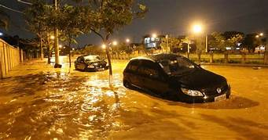

Chuva causa acidentes em BH e região;
acompanhe no canal de trânsito Atualizações a respeito de interdições e bloqueio de vias por ocorrências relacionadas à chuva são publicadas em tempo real no canal de trânsito
 A manhã desta sexta-feira (17) está apenas no começo, mas já foram registradas inúmeras ocorrências de acidentes, entre quedas de árvores e até desabamentos e deslizamentos, relacionados às fortes e ininterruptas chuvas que atingem Belo Horizonte e os municípios da região metropolitana nas últimas horas. Todas as atualizações a respeito de interdições e bloqueio de vias são publicadas, em tempo real no canal de trânsito de O TEMPO (clique para acompanhar). A avenida Álvares Cabral, entre as ruas Timbiras e Rio de Janeiro, está interditada na manhã desta sexta-feira (17) após uma árvore cair sobre o asfalto. Uma equipe da BHTrans atua em conjunto com uma equipe de limpeza da Prefeitura de Belo Horizonte (PBH) para retirada de galhos. A Cemig também está no local para reparos na rede elétrica. PUBLICIDADE Uma árvore também caiu na rua Ceará, região Central da cidade entre as avenida Alfredo Balena e Francisco Sales, e o trecho precisou ser interditado, As linhas 3301A, 33, 51 e 66 precisaram ser desviadas para: avenida Francisco Sales, avenida Brasil, avenida Afonso Pena, rua Pernambuco, avenida Carandaí e rua Guajajaras. Às 8h20, a rua já havia sido liberada para os motoristas. Não apenas, houve ainda uma outra ocorrência mais séria em Nova Lima, na região metropolitana de BH. Na MG-030, uma pedra escorregou de um barranco e atingiu um ônibus da linha 3837 (Honório Bicalho/Belo Horizonte). O trecho precisou ser interditado, ainda sem previsão de liberação. Carro destruído O motorista de aplicativo Daniel Nogueira, 43, não sabe como serão os próximos dias sem poder trabalhar. Seu carro, usado para viagens com passageiros, acabou atingido pelos destroços de um muro que cedeu na rua Extremoso, no bairro Olaria, na região do Barreiro, na madrugada desta sexta-feira (17). "Cheguei em casa por volta de 0h. Tudo aconteceu umas 2h da manhã. Eu estava dormindo, de repente ouvi um barulho muito forte e o som do alarme do carro disparado. Quando desci para ver, achei o carro debaixo dos escombros", conta. De acordo com ele, o muro que desabou fazia parte da residência de um vizinho seu.
Site oficial da notícia apresentada.